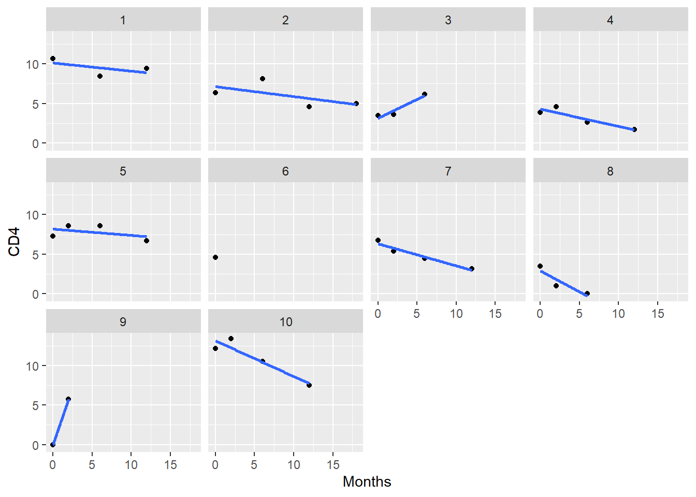

Capítulo 8 Joint models para datos longitudinales y datos de supervivencia
En el capítulo anterior hemos visto cómo modelar una variable dependiente que mide el tiempo hasta una variable de interés (análisis de supervivencia). Vimos también cómo tener en cuenta como estimar modelos de supervivencia cuando una variable independiente es medida a lo largo del tiempo. En este tema, iremos un paso más allá y nos interesaremos por unos modelos en los que nuestra variable resultado está formada por dos tipos de variables: una variable respuesta medida de forma longitudinal y otra que recoge el tiempo hasta un evento de interés. A estos modelo se les comonce como “Joint Models”. Estos modelos tienen en cuenta las variables tiempo-dependientes para modelizar el tiempo hasta evento con posible censura por la derecha. Estos modelos surgen cuando hay valores faltantes en algunas medidas de las variables \(x_k\). Para solventarlo, modelizan una regresión de supervivencia de Cox, y en lugar de condicionar por los valores observados de \(x_k\), se condiciona por los valores ajustados de ellos según modelos de datos longitudinales que pueden ser los modelos mixtos. De esta forma se fusiona los modelos de medidas repetidas con los modelos de Cox..
En este curso mostraremos cómo llevar a cabo estos análisis mediante la librería JM, pero debemos tener en cuenta que también podemos usar la librería joineR para ajustar este tipo de modelos. Esta librería también tiene incorporadas funciones y opciones para tener encuenta eventos competitivos, es decir, cuando nuestro evento de interés no es uno sólo si no más de uno.
8.1 ¿Por qué deberíamos utilizar este tipo de modelos?
Como mencionamos en la sección anterior, el modelo de riesgos proporcionales de Cox se puede ampliar para incorporar variables dependientes del tiempo. Sin embargo, cuando enfocamos nuestro interés en el tiempo hasta el evento y deseamos tener en cuenta el efecto de la variable longitudinal como una covariable dependiente del tiempo, los enfoques tradicionales para analizar los datos del tiempo hasta el evento (como usar la verosimilitud parcial para los modelos de Cox) no son aplicables en todas las situaciones.
En particular, los modelos estándar de tiempo hasta el evento requieren que las covariables dependientes del tiempo sean externas; es decir, el valor de esta covariable en el momento \(t\) no debe verse afectado por la ocurrencia de un evento en el momento \(u\), cuando \(t>u\). Sin embargo, el tipo de covariables dependientes del tiempo que tenemos en los estudios longitudinales no cumplen con esta condición. Esto se debe a que son el resultado de un proceso estocástico generado por el sujeto, el cual está directamente relacionado con el mecanismo que controla que se produzca el evento de interés. En otras palabras, la variable longitudinal no es independiente del evento de interés. Podemos imaginar varias situaciones donde esto ocurre. Supongamos que estamos interesados en estudiar el tiempo hasta que se produzca in evento cardiovascular. Obviamente, si recogemos la variable tensión arterial de forma longitudinal, ambos procesos estarán relacionados y por lo tanto, las condiciones para aplicar el modelo de Cox no se cumplen. En base a esto, para producir inferencias correctas, necesitamos aplicar un modelo conjunto que tenga en cuenta la distribución conjunta de los resultados longitudinales y de supervivencia.
Otra ventaja de estos modelos es que permiten tratar las medidas de error en las variables dependientes del tiempo (variable longitudinal en este caso). En un modelo de Cox con covariables dependientes del tiempo, asumimos que las variables se miden sin error.
IMPORTANTE: Cuando pensamos en covariables dependientes del tiempo, primero debemos distinguir entre dos categorías diferentes, a saber, covariables internas o endógenas o covariables externas o exógenas. Las covariables internas se generan a partir del propio individuo y por tanto requieren la existencia de dicho individuo. Por ejemplo el recuento de células CD4 y el riesgo de muerte por VIH son procesos estocásticos generados por el individuo. Por otro lado, la contaminación del aire es una covariable externa a los ataques de asma, ya que el paciente no influye en la contaminación del aire.
De esta forma, nos enfrentamos ante dos situaciones en las que queremos usar estos modelos. Primero, cuando nos centramos en el resultado de supervivencia y deseamos tener en cuenta el efecto de una covariable dependiente del tiempo endógena medida con error, y segundo, cuando nos interesamos en que la variable resultado sea la variable longitudinal y deseamos corregir por el abandono no aleatorio (no aleatorio porque no seguimos observando al individuo ya que se ha producido el evento de interés).
8.2 Joint models
Como mencionamos, los ‘joint models’ tienen en cuenta dos resultados, la respuesta longitudinal y el tiempo de supervivencia. Para estimar este tipo de modelos, primero necesitamos ajustar un modelo para la respuesta longitudinal (generalmente un modelo lineal mixto) y luego para el tiempo de supervivencia. Estos modelos ya los hemos visto en capítulos anteriores, así que ahora lo que haremos es explicar cómo estimar los ‘joint models’ con R.
Para ilustrar cómo llevar a cabo estos análisis continuaremos con los datos de Sida analizados en el capítulo anterior. Primero necesitamos ajustar por separado el modelo lineal mixto (datos longitudinales) y el modelo Cox (tiempo hasta evento), y luego tomar los objetos devueltos y usarlos como argumentos principales en la función jointModel() de la librería JM.
library(JM)
data(aids)
head(aids) patient Time death CD4 obstime drug gender prevOI AZT start stop event
1 1 16.97 0 10.677078 0 ddC male AIDS intolerance 0 6.00 0
2 1 16.97 0 8.426150 6 ddC male AIDS intolerance 6 12.00 0
3 1 16.97 0 9.433981 12 ddC male AIDS intolerance 12 16.97 0
4 2 19.00 0 6.324555 0 ddI male noAIDS intolerance 0 6.00 0
5 2 19.00 0 8.124038 6 ddI male noAIDS intolerance 6 12.00 0
6 2 19.00 0 4.582576 12 ddI male noAIDS intolerance 12 18.00 0La idea aquí es probar el efecto del tratamiento sobre la supervivencia después de ajustar el recuento de células CD4, que es una medida recogida a lo largo del tiempo. Este también es el modelo que ajustamos en la sección anterior usando un modelo de Cox con datos dependientes del tiempo, pero que como hemos comentado, no cumplen las condiciones necesarias para que la estimación mediante verosimilitud parcial sea correcta.
Veamos que valores toma la variable CD4 a lo largo del tiempo usando las funciones de ggplot que ya hemos visto en este curso
ggplot(aids, aes(x = obstime, y = CD4, group = patient)) +
geom_line() + xlab("Months") + facet_wrap(~drug)Visualicemos los 10 primeros individuos para ver si tenemos que usar un modelo mixto con intercept o pendiente aleatoria
aids10 <- filter(aids, patient%in%c(1:10))
ggplot(aids10, aes(x = obstime, y = CD4)) +
geom_point() + stat_smooth(method = "lm", se = FALSE) +
xlab("Months") + facet_wrap(~patient)
Ahora vamos a especificar y ajustar los modelos para cada uno de nuestros outcomes. El modelo lineal de efectos mixtos para los recuentos de células CD4 incluye:
- Parte de efectos fijos: efecto principal del tiempo y la interacción con el tratamiento.
- Matriz de diseño de efectos aleatorios: el intercept y un término de tiempo, ya que vemos en la gráfica anterior que ambos son aleatorios, es decir hay intercepts y pendientes distintas para cada individuo.
El submodelo de supervivencia incluye: efecto del tratamiento (como una covariable independiente del tiempo) y el verdadero efecto subyacente del recuento de células CD4 estimado a partir del modelo longitudinal (como dependiente del tiempo). Para el modelo de Cox, asumiremos que la función de riesgo basal es constante por partes (dependiendo de cuando se ha observado los datos longitudinales). Es por ello que definimos method = "piecesiwse-PH-GH". Otras posibilidades incluye estimarla mediante un modelo paramétrico de Weibull (“weibull-AFT-GH”) o utilizar B-splines que nos daría una estimación suave de la functión de riesgo basal (“spline-PH-GH”). Para más detalles ejectuar ?JointModel
fitLME <- lme(CD4 ~ obstime:drug, random = ~ obstime | patient, data = aids)
fitSURV <- coxph(Surv(Time, death) ~ drug + gender, data = aids.id, x = TRUE)
fitJM <- jointModel(fitLME, fitSURV, timeVar = "obstime", method = "piecewise-PH-GH")
summary(fitJM)
Call:
jointModel(lmeObject = fitLME, survObject = fitSURV, timeVar = "obstime",
method = "piecewise-PH-GH")
Data Descriptives:
Longitudinal Process Event Process
Number of Observations: 1405 Number of Events: 188 (40.3%)
Number of Groups: 467
Joint Model Summary:
Longitudinal Process: Linear mixed-effects model
Event Process: Relative risk model with piecewise-constant
baseline risk function
Parameterization: Time-dependent
log.Lik AIC BIC
-4340.062 8714.123 8784.611
Variance Components:
StdDev Corr
(Intercept) 4.5280 (Intr)
obstime 0.1700 -0.0503
Residual 1.8747
Coefficients:
Longitudinal Process
Value Std.Err z-value p-value
(Intercept) 7.2059 0.1349 53.4349 <0.0001
obstime:drugddC -0.1897 0.0211 -8.9736 <0.0001
obstime:drugddI -0.1711 0.0217 -7.8684 <0.0001
Event Process
Value Std.Err z-value p-value
drugddI 0.3548 0.1581 2.2441 0.0248
gendermale -0.2893 0.2606 -1.1101 0.2669
Assoct -0.3001 0.0382 -7.8480 <0.0001
log(xi.1) -2.2292 0.3037 -7.3400
log(xi.2) -1.9447 0.2994 -6.4961
log(xi.3) -1.6380 0.3384 -4.8407
log(xi.4) -2.1784 0.4178 -5.2145
log(xi.5) -2.1003 0.3968 -5.2931
log(xi.6) -2.0977 0.4691 -4.4715
log(xi.7) -2.0881 0.5873 -3.5556
Integration:
method: Gauss-Hermite
quadrature points: 15
Optimization:
Convergence: 0 IMPORTANTE: Debido al hecho de que la función
jointModelextrae toda la información requerida de estos dos objetos (por ejemplo, vectores de respuesta, matrices de diseño, etc.), en la llamada a la funcióncoxph()necesitamos especificar el argumentox = TRUE. Con esto, la matriz de diseño del modelo de Cox se incluye en el objeto devuelto.Además, el argumento principal
timeVarde la funciónjointModel()se usa para especificar el nombre de la variable dependiente del tiempo en el modelo lineal mixto, que se requiere para el cálculo de este submodelo.
Antes de continuar descriendo los resultados obtenidos, notemos que los resultados son similares al modelo de Cox utilizado en la sección anterior. Es decir, los individuos que toman didanosine (ddI) tienen peor supervivencia que los que toman zalcitabine (ddC) (p=0.0248). Notemos de nuevo como el valor es más significativo que con el modelo de Cox, cumpliéndose así la premisa que analizar los datos con el modelo más adecuado va en favor del investigador.
El parámetro etiquetado ‘Assoct’ mide el efecto de la variable CD4 (modelada mediante el modelo mixto) en el riesgo de muerte, que en este caso es muy significativa (p<0.0001) y nos indica que este riesgo decrece a medida que aumentan los valores de CD4. Los parametros (xi.1, xi.2, ..) corresponden a los parámetros de la functión de riesgo basal estimada mediante una functión constante por partes
Para obtener el Hazard Ratio tanto de las variables fijas como de las variables longitudinales tenemos que exponenciar el valor que observamos en la tabla. En consecuencia, como este valor para la variable longitudinal CD4 es -0.30, entonces, un aumento de una unidad en el recuento de células CD4 disminuye el riesgo en un 26% (exp(-0.30) = 0.74).
También podemos calcular el IC95% mediante
confint(fitJM, parm = "Event") 2.5 % est. 97.5 %
drugddI 0.04492354 0.3547566 0.6645897
gendermale -0.80012212 -0.2893215 0.2214791
Assoct -0.37504904 -0.3001018 -0.2251546exp(confint(fitJM, parm = "Event")) 2.5 % est. 97.5 %
drugddI 1.0459479 1.4258336 1.9436929
gendermale 0.4492741 0.7487714 1.2479212
Assoct 0.6872556 0.7407428 0.7983928Si queremos ver los efectos para el modelo longitudinal
confint(fitJM, parm = "Longitudinal") 2.5 % est. 97.5 %
(Intercept) 6.9416260 7.2059361 7.4702462
obstime:drugddC -0.2311402 -0.1897056 -0.1482710
obstime:drugddI -0.2137151 -0.1710964 -0.1284777Podemos visualizar las predicciones para un individuo (por ejemplo el 2) tras las 3 o 4 primeras observaciones de CD4 mediante
aids.id1 <- filter(aids, patient==2)
fit3 <- survfitJM(fitJM, newdata = aids.id1[1:3, ], idVar = "patient")
fit4 <- survfitJM(fitJM, newdata = aids.id1[1:4, ], idVar = "patient")
par(mfrow=c(1,2))
p1 <- plot(fit3, estimator="mean", include.y = TRUE, conf.int=0.95,
fill.area=TRUE, col.area="lightblue", main="Patient 2")
p2 <- plot(fit4, estimator="mean", include.y = TRUE, conf.int=0.95,
fill.area=TRUE, col.area="lightblue", main="Patient 2")